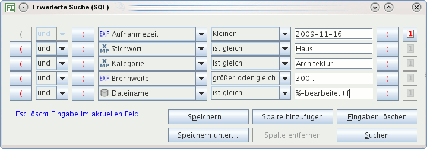

Mit der erweiterten Suche können Sie fast alles finden, was in der Datenbank gespeichert ist. Sie definieren, wie gesucht werden soll, und speichern Suchen, die sie zukünftig schnell benutzen.

Im zweiten Dropdown-Listenfeld von links wählen Sie aus, was Sie suchen: Aufnahmezeit, Bildbeschreibung, Fotograf, ... Im folgenden Dropdown-Listenfeld wählen Sie aus, worauf der folgende Suchtext passen soll:
Ei% passt auf alles, das mit Ei
anfängt: Ei, Eier, Einser, Eis, ...
%en passt auf Begriffe mit en am Ende:
Einsen, Wiesen, Burgen, ... und %eier%
auf alles, das irgendwo eier enthält: Eier,
Schlaumeier, Eierbecher, Zweierbeziehung, .... SQL:
LIKE.
ist gleich, nicht):
Alle Bilder, die nicht mit 50 mm Brennweite fotografiert wurden,
alle Bilder, die nicht von Heinz fotografiert wurden, ... SQL:
<>.
Groß- und Kleinschreibung sind egal: Sie können nach meyer suchen oder nach Meyer, gefunden werden die gleichen Bilder.
Der Dialog versucht, für die Eingabefelder nur passende Formate zuzulassen. Geben Sie beispielsweise Buchstaben ein für eine ISO-Zahl, werden diese nicht angenommen. Ist ein Punkt zu sehen, steht dieser für ein Komma und Sie geben Zahlen so ein, dass ganze Zahlen vor dem Punkt enden. Mit den Pfeiltasten können Sie den Eingabecursor positionieren. Beispiele sehen Sie in folgender Abbildung:
In der Abbildung oben ist das erste Eingabefeld ein Feld für Kommazahlen. Ganze Zahlen enden vor dem Punkt, wie die 35 im dritten Feld, im zweiten ist die Zahl 7,8 zu sehen (Der Punkt bedeutet ein Komma). Das vorletzte Feld dient der Eingabe eines Datums in der Form Jahr-Monat-Tag, so wie im letzten Eingabefeld zu sehen ist am Beispiel des 10. März 2008.
Das Datumsformat ist: YYYY-MM-DD: Das Jahr vierstellig,
danach ein Bindestrich, folgend der Monat zweistellig, wieder ein
Bindestrich und zuletzt der Tag zweistellig. Für den 24.12.2007
geben Sie ein 2007-12-24. Sie können auch den
Kalender benutzen (Schaltfläche rechts).
Suchbegriffe können Sie verknüpfen mit und sowie mit oder. Und bedeutet, der folgende Begriff muss auf jeden Fall in der Datenbank stehen, oder findet den folgenden Suchbegriff unabhängig vom vorhergehenden. Beispiele:
Kamera ist gleich Nikon D300 und
Aufnahmeort ist gleich München findet Bilder, die mit der
Nikon D300 in München fotografiert wurden
Kamera ist gleich Nikon D300 oder
Aufnahmeort ist gleich München findet alle Bilder, die
mit der Nikon D300 überall auf der Welt fotografiert wurden und
zusätzlich alle Bilder, die in München mit jeder beliebigen
Kamera fotografiert wurden
Datum größer gleich 2005-01-01 und Datum
kleiner gleich 2005-12-31 findet alle Bilder, die im Jahr
2005 fotografiert wurden
Datum größer 2005-12-31 oder Datum
kleiner 2005-01-01 findet alle Bilder vor 2005 und nach
2005, also alle, die nicht 2005 fotografiert wurden
Mit mehreren Suchbegriffen lassen sich versehentlich unlösbare
Aufgaben stellen: Stichwort ist gleich Baum UND Stichwort ist
gleich Himmel wird nie Bilder finden, da ein Stichwort
entweder "Baum" heißt oder "Himmel".
Mit Klammern lassen sich Probleme lösen wie: Finde alle Bilder, die
vom Fotografen Peter oder vom Fotografen
Heinz im Jahr 2006 fotografiert wurden.
Die Anfrage Fotograf ist gleich Peter oder Fotograf ist gleich
Heinz und Aufnahmezeit größer gleich 2006-01-01 und Aufnahmezeit
kleiner gleich 2006-12-31 findet zwar alle Bilder, die Peter
und Heinz 2006 fotografierten, aber auch alle Bilder, die 2006 von
irgendwem (anders) fotografiert wurden. Mit Klammern lässt sich die
Abfrage richtig formulieren: (Fotograf ist gleich Peter oder
Fotograf ist gleich Heinz) und Aufnahmezeit größer gleich 2006-01-01
und Aufnahmezeit kleiner gleich 2006-12-31.
Werden Klammern falsch gesetzt, erzeugt das einen Fehler und am unteren Fensterrand erscheint auf der Logdatei-Schaltfläche ein rotes Kreuz!
Speichern Sie wichtige Suchen! Alle gespeicherten Suchen sehen Sie links im Programmfenster durch Klick auf den Kartenreiter Suchen. Dort lassen sie sich ändern, löschen und neu erzeugen durch Klick mit der rechten Maustaste auf eine gespeicherte Suche. Klicken Sie mit der linken Maustaste auf den Namen einer gespeicherten Suche, erscheinen alle gefundenen Bilder.
Falls Ihnen die Spalten nicht ausreichen, können Sie weitere hinzufügen durch Betätigen der Schaltfläche Spalte hinzufügen. Sollte der Dialog nicht ausreichend groß gezogen sein oder wollen Sie diesen nicht größer ziehen, erscheint eine Scroll-Leiste mit der Sie die Spalten nach oben und unten schieben können.
Mit der Schaltfläche Spalte entfernen können Sie hinzugefügte Spalten entfernen (und nur diese).